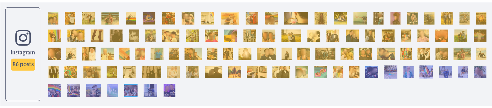
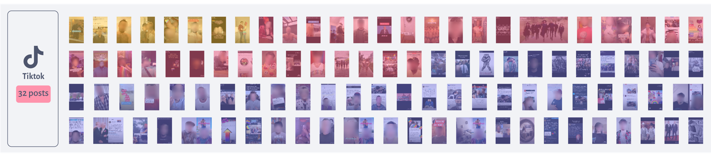
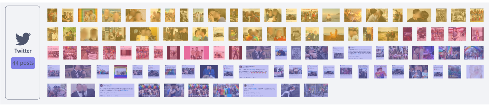

It is clear that different categories of content perform differently on different platforms. Even though the hashtag and the topic are the same, the content of the most liked posts manifested in diverse ways on Twitter, Instagram, and TikTok.

Instagram is the one with an evident predominance of a specific type of content. In this platform, the hijacking was mainly about sharing personal pictures, stories, and experiences. When looking at the captions, the hijacking itself was barely mentioned and a high frequency of couples can be seen with just a glance at the thumbnails.
When looking at the TikTok section, on the other hand, the thumbnails have a clear predominance of selfie-style videos. The platform is the one with the most fun or satirical content among its most engaging posts, but more than half of the posts were dedicated to explaining and giving information about the hashtag as well, showing a clear difference when compared to Instagram.
On Twitter, where the hijacking started, the majority of content is dedicated to contextualizing and informing the other users about the hijacking. Nevertheless, we can also see a considerable amount of personal content on the platform and even a few funny and satirical tweets.
